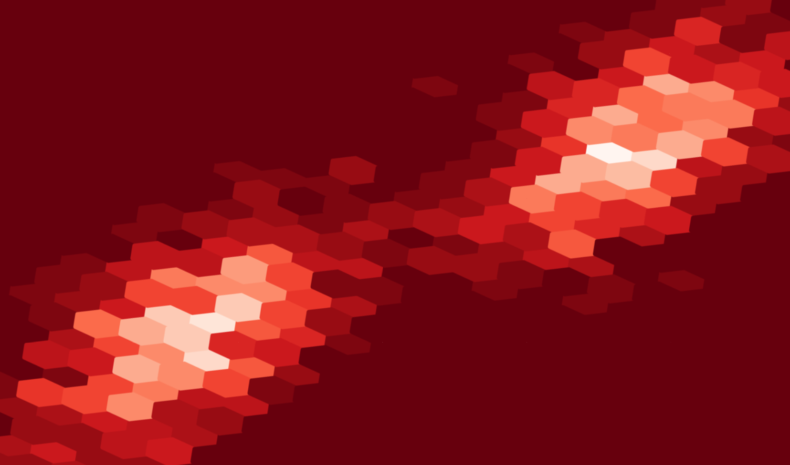

Background image
How to create that blog background image
This blog post is meant for me to experiment with the Asciidoc syntax to move away from Markdown and integrate it to this jekyll template, as well as to document how I produced my background image.
Preparing the environment
# Import relevant libraries
import numpy as np
import matplotlib.pyplot as plt
# Define the figsize for all pyplot plots
plt.rcParams['figure.figsize'] = 10, 15Define useful parameters
size = 500
loc = 5
scale = 1.8
x_factor = 0.5Generate the values to be ploted
Here we use gaussian distributions for generatin the image but you could use any to generate an image that suits you better.
# Create 2 gaussian blobs distributed around 0 and concatenate them in a single vector
x = np.random.normal(size=size, loc=loc, scale=scale)
x = np.concatenate([x, -x])
# Create another vector as a combination of the previous one and a new gausian blob
y = (x * x_factor + np.random.normal(size=size*2))Create and save the plot
Here the colormap used is 'Reds_r' and for the real background image it was 'Blues_r'. To find a list of all available colors you can follow this link.
plt.hexbin(x, y, gridsize=(20,20), cmap=plt.get_cmap('Reds_r'))
plt.savefig('background_red.png', dpi=500) 
Once this image is generated, you can use your favorite image editor to rotate it, crop it, etc… Be creative :)